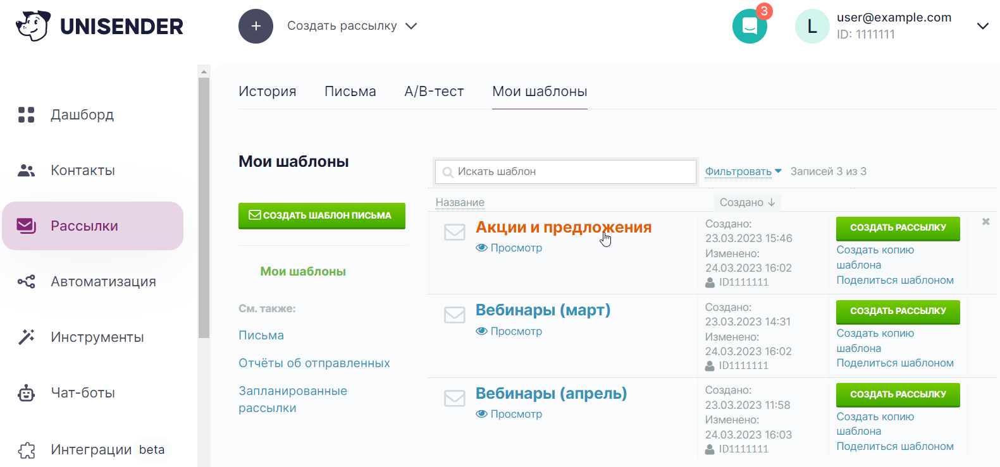
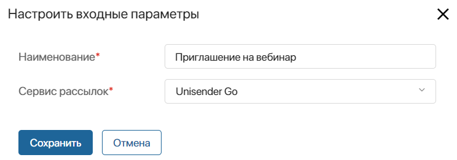

The Email templates app stores templates for creating bulk and triggered email campaigns. Here you can:
- Create and edit templates in the email editor. When you publish such a template, it will be saved in the connected email campaign service.
- Import templates created in the email service.
Before working with templates, make sure that you have the integration module with the email service enabled.
The following methods should be implemented in the connected email service:
CRM_Marketing_SetTemplateHTML. For saving templates created in the system in the service.CRM_Marketing_ImportTemplates. For importing templates from the email service.
For more information about setting up integration with an email service, see TS SDK.
Create a template
The Email templates app uses the built-in graphical email editor to create templates. To add a template:
- On the app page in the upper right corner, click +Template.
- In the opened window, specify the name of the template and select the connected email service.

- Click Save. After that, the template page will be added to the app with the Draft status and the template editor will open.
- Create the content of the new template in the email editor. To do this, transfer the necessary blocks from the sidebar: columns, text, images, buttons, and links. Then design the content using the style editor, component settings, and other tools. For more information, see the Template editor article.
- Save the template. To do this, in the upper right corner of the editor, select:
- Save as Draft. Assign the template the Draft status. Such a template cannot be used in email campaign settings.
- Publish. Save the template page with the Published status. Such a template will be automatically saved in the email service and can be selected in the settings of creating a bulk or triggered email campaign.
Import templates
You can add all templates from your account in a connected email service to the Email templates app. To do this, click the three dots icon in the upper right corner of the app page and then click the Import Templates button that appears.
The uploaded template will be saved with the Published status and will be available for selection in the settings for creating a bulk or trigger email campaign.
To learn how to create templates in the email service, see its official documentation.
Template page
To view a template, select it from the list of items on the app page. On the page, you will see the content of the template, as well as its status:
- Draft. The template is not available for selection in the email campaigns settings.
- Published. The template is saved in the connected email service and can be bound to a bulk or trigger email campaign.

You can open a template with any status in the email editor to change its content. To do this, click Edit at the bottom of the page.
Edit a template in the email service
You can edit the template if the email service supports this function and is implemented in the custom integration module. To do this:
- Open the section that stores email templates and select the template to be changed on the tab with your templates.
- Edit the template and save the changes.
- Go back to BRIX and import templates again. The existing templates will be updated.
Customize a template
You can personalize emails, i.e. set up the filling of subscribers’ data into email templates in the connected mailing service.
Contact page fields from BRIX, which are set in the settings of the integration module with email service, are used as data. Add this data to the templates using the template editor. You can also modify the template in the mailing service and then import it.
Note that you can customize a template only if the service that you’re using supports this function and it is configured in your custom integration module.
Found a typo? Select it and press Ctrl+Enter to send us feedback